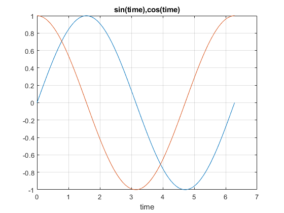
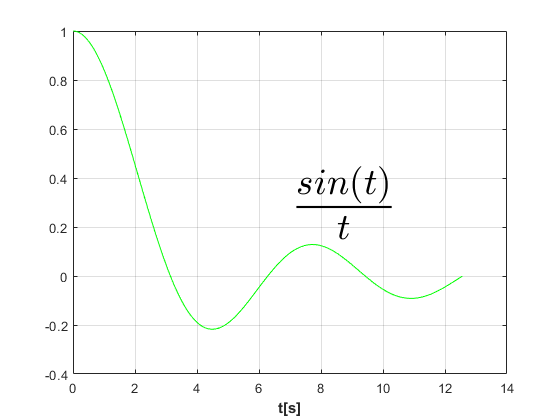

Vectori si matrice | Instructiuni Matlab | Reprezentari grafice
Contents
- Vectori si matrice
- Operatii cu vectori si matrice
- Exemplu pentru definirea unui vector
- Exemplu pentru definirea unui matrice
- Semnificatia operatorilor
- Functii pentru lucrul cu vectori si matrice
- Operatorii booleeni
- Generarea vectorilor
- Lucrul cu matrice impartite in blocuri
- Concatenarea matricelor
- Functii ce creaza matrice speciale
- Modificarea dimensiunilor matricelor
- Instructiuni Matlab
- Instructiunea for
- Instructiunea while
- Instructiunile continue si break
- Instructiunea if
- Instructiunea switch
- Reprezentari grafice
- Reprezentarea curbelor plane
- Reprezentarea curbelor in plan se face cu functiile:
- Culoare + Simbol
- Marker + Simbol
- Stil linie + Simbol
- Editarea unei figuri
- Modificarea interactiva a proprietatilor obiectelor grafice
- Modificarea proprietatilor axelor
- Modificarea proprietatilor curbelor
- Modificarea programata a proprietatilor obiectelor grafice
- Obiectul Root
- Obiectul Figure
- Obiectul Axes
- Obiectul Line
- Obiectul Text
- Modificarea proprietatilor obiectelor grafice
Vectori si matrice
Operatii cu vectori si matrice
Definirea unui vector sau a unei matrice se face scriind elementele între paranteze drepte, [ ]. Operatorul [ ] se va numi operator de concatenare.
Exemplu pentru definirea unui vector
V=[21,11,8]
V =
21 11 8
Exemplu pentru definirea unui matrice
Caracterele , si spatiu separa coloanele. Caracterele ; si CR (cariage return) separa liniile. Indicii vectorilor si matricelor incep de la 1. Elementul matricei a se scrie a(i,j).
M=[21,11,8;
99 19 73;
67 7 4]
C=[2 1 8
4 5 6
9 0 3;]
M =
21 11 8
99 19 73
67 7 4
C =
2 1 8
4 5 6
9 0 3
Semnificatia operatorilor
Operatiile cu matrice se efectueaza cu operatorii +, -, , /, \, ^, ., ./, .\ si .^. Semnificatia operatorilor +, -, * este cea de adunare,scadere si inmultire a matricelor cu dimensiuni corespunzatoare.
Operatorul "/" -> Exemplu "M/C" -> Semnifica "M*inv(C)"
M/C
ans =
-1.4479 2.4896 1.5486
3.4792 3.1042 8.8472
-3.8854 2.1771 7.3403
M*inv(C)
ans =
-1.4479 2.4896 1.5486
3.4792 3.1042 8.8472
-3.8854 2.1771 7.3403
Operatorul "\" -> Exemplu "M\C" -> Semnifica "inv(M)*C"
M\C
ans =
0.1412 -0.0105 -0.0408
0.0144 0.0627 0.8698
-0.1405 0.0664 -0.0889
inv(M)*C
ans =
0.1412 -0.0105 -0.0408
0.0144 0.0627 0.8698
-0.1405 0.0664 -0.0889
Operatorul "^" -> Exemplu "M^d" -> Semnifica "M la puterea d"
M^3
ans =
159691 39171 56748
545567 151917 223845
209851 50551 88750
Operatorul ".*" -> Exemplu "A=M.*C" -> Semnifica "A(i,j)=M(i,j)*C(i,j)"
A=M.*C
A =
42 11 64
396 95 438
603 0 12
Operatorul "./" -> Exemplu "A=M./C" -> Semnifica "A(i,j)=M(i,j)/C(i,j)"
A=M./C
A =
10.5000 11.0000 1.0000
24.7500 3.8000 12.1667
7.4444 Inf 1.3333
Operatorul ".\" -> Exemplu "A=M.\C" -> Semnifica "A(i,j)=M(i,j)*C(i,j)"
A=M.\C
A =
0.0952 0.0909 1.0000
0.0404 0.2632 0.0822
0.1343 0 0.7500
Operatorul ".^" -> Exemplu "A=M.^C" -> Semnifica "A(i,j)=M(i,j)^C(i,j)"
A=M.\C
A =
0.0952 0.0909 1.0000
0.0404 0.2632 0.0822
0.1343 0 0.7500
Prioritatile operatorilor .*, ./, .\ si .^ sunt cele ale operatorilor *, /, \ si ^. In cazul operatorului ^, unul dintre operanzi trebuie sa fie scalar. Transpusa unei matrice se calculeaza cu operatorul '.
Functii pentru lucrul cu vectori si matrice
Functia length(V) determina lungimea vectorului V
length(V)
ans =
3
Functia sum(V) determina suma elementelor vectorului V
sum(V)
ans =
40
Functia prod(V) determina produsul elementelor vectorului V
prod(V)
ans =
1848
Functia det(C) calculeaza determinantul matricei C
det(C)
ans = -288
Functia inv(C) calculeaza inversa matricei C
inv(C)
ans =
-0.0521 0.0104 0.1181
-0.1458 0.2292 -0.0694
0.1563 -0.0313 -0.0208
Functia [m n]=size(C) determina dimensiunile matricei C
size(C)
ans =
3 3
Observatii :
- in cazul in care matricea este singulara sau aproape singulara, se afiseaza un mesaj de eroare.
- functia size(C) are ca rezultat o matrice cu o linie si doua coloane cu dimensiunile matricei A, m si n.
Operatorii booleeni
Operatorii booleeni ~, &, | si xor se aplica asupra elementelor vectorilor si matricelor. In cazul operatorilor &, | si xor matricele trebuie sa aiba aceleasi dimensiuni.
Expresia ~M are rezultatul
~M
ans = 3×3 logical array 0 0 0 0 0 0 0 0 0
Expresia M&C are rezultatul
M&C
ans = 3×3 logical array 1 1 1 1 1 1 1 0 1
Expresia M|C are rezultatul
M|C
ans = 3×3 logical array 1 1 1 1 1 1 1 1 1
Expresia xor(M,C) are rezultatul
xor(M,C)
ans = 3×3 logical array 0 0 0 0 0 0 0 1 0
Functiile matematice uzuale, sin, cos, etc., pot avea ca argumente vectori si matrice. In acest caz functia se aplica asupra fiecarui component al vectorului sau matricei (vectorizarea functiilor).
sin(C)
ans =
0.9093 0.8415 0.9894
-0.7568 -0.9589 -0.2794
0.4121 0 0.1411
log(C)
ans =
0.6931 0 2.0794
1.3863 1.6094 1.7918
2.1972 -Inf 1.0986
Generarea vectorilor
Generarea vectorilor cu pasul dat a=amin:pas:amax
a=0:3:9
a =
0 3 6 9
Generarea vectorilor daca se da numarul N de noduri(elemente) a=linspace(amin,amax,N).
Pasul se calculeaza cu urmatoarea formula : pas=(amax-amin)/(N-1)
a=linspace(2,9,5)
a =
2.0000 3.7500 5.5000 7.2500 9.0000
Generarea vectorilor cu a=vi:vf
a=3:7
a =
3 4 5 6 7
Putem atribui acesti vectori ca valori unor variabile
a=[1:1:3;2:1:4]
a =
1 2 3
2 3 4
Lucrul cu matrice impartite in blocuri
Indicii elementelor matricelor si vectorilor incep de la 1. Indicii pot fi numere pozitive, expresii sau vectori cu elemente pozitive. Expresia : reprezinta toate elementele unei linii sau ale unei coloane.
F=[3 4 5 6;
10 11 12 13;
14 13 12 11;
10 6 5 4]
F =
3 4 5 6
10 11 12 13
14 13 12 11
10 6 5 4
Expresia F(1:2;2:4) este matricea formata din elementele de la intersectia liniilor 1,2 si coloanelor 2,4.
F(1:2,2:4)
ans =
4 5 6
11 12 13
Expresia F(4, :) este linia a patra a matricei.
F(4,:)
ans =
10 6 5 4
Concatenarea matricelor
Operatorul de concatenare este []. El concateneaza elementele sale intr-un tablou.
y=[[1 2 3],[4 5 6],7]
y =
1 2 3 4 5 6 7
Instructiunea B = [F [-1 -2 -3 -4]'] concateneaza matricea A si vectorul coloana [-1 -2 -3 -4]'. Rezultatul este matricea :
B = [F [-1 -2 -3 -4]']
B =
3 4 5 6 -1
10 11 12 13 -2
14 13 12 11 -3
10 6 5 4 -4
Instructiunea B = [F; [-1 -2 -3 -4]] concateneaza matricea A si vectorul linie [-1 -2 -3 -4]. Rezultatul este matricea :
B = [F; [-1 -2 -3 -4]]
B =
3 4 5 6
10 11 12 13
14 13 12 11
10 6 5 4
-1 -2 -3 -4
Functii ce creaza matrice speciale
Functia zeros(m,n) creaza matrice cu toate elementele zero.
K=zeros(3,4)
K =
0 0 0 0
0 0 0 0
0 0 0 0
Functia ones(m,n) creaza matrice cu toate elementele unu.
K=2*ones(2,2)
K =
2 2
2 2
Functia rand(m,n) creaza matrice cu elementele numere aleatoare cu distributie uniforma
K=rand(2,4)
K =
0.2543 0.2435 0.3500 0.2511
0.8143 0.9293 0.1966 0.6160
Functia randn(m,n) creaza matrice cu elementele numere aleatoare cu distributie normala
K=randn(3,2)
K =
-0.1774 0.2916
-0.1961 0.1978
1.4193 1.5877
Functia eye(m,n)creaza matrice cu 1 pe diagonala principala si restul elementelor 0. eye(n) creaza o matrice unitate de dimensiune n.
K=eye(4,5)
K =
1 0 0 0 0
0 1 0 0 0
0 0 1 0 0
0 0 0 1 0
K=eye(3)
K =
1 0 0
0 1 0
0 0 1
In acest tabel m reprezinta numarul de linii, iar n numarul de coloane.
Modificarea dimensiunilor matricelor
Este posibil de a transforma o matrice intr-un vector sau invers.Transformarea matricelor se face in felul urmator : elementele matricei originale se asaza intr-un vector, coloana dupa coloana. Vectorul obtinut se transforma intr-o matrice creind din vector coloanele noii matrice.Functia ce face aceste transformari se numeste reshape.
L=[3 4 5;8 9 10]
L =
3 4 5
8 9 10
reshape(L,3,2)
ans =
3 9
8 5
4 10
reshape(L,6,1)
ans =
3
8
4
9
5
10
c=[3 4 5 8 9 10]
c =
3 4 5 8 9 10
reshape(c,2,3)
ans =
3 5 9
4 8 10
Instructiuni Matlab
Instructiunea for
Instructiunea for are forma :
for contor = vi:r:vf
bloc de instructiuni
end
Aici vi este valoarea initiala a variabilei contor, r este ratia, iar vf este valoarea finala. Daca r are valoarea unu, expresia se poate scrie vi:vf.
for i=1:3:10 f(i)=i*5; end f
f =
5 0 0 20 0 0 35 0 0 50
Instructiunea for are si urmatoarea forma :
for contor = expresie
bloc de instructiuni
end
Aici expresie este un vector sau o matrice.
Cand expresie este un vector, contor ia ca valoare cate un element al vectorului si executa blocul de instructiuni.
j=[1:3:10]; for i=j n(i)=i*5; end n
n =
5 10 15 20 25 0 35 0 0 50
Atunci cand expresie este o matrice, variabila contor ia pe rand ca valoare cate o coloana a matricei si executa blocul de instructiuni.
m=[3 -4
4 -6
5 -8]
m =
3 -4
4 -6
5 -8
Pentru fiecare coloana mi a matricei vrem sa calculam matricea mi * mi’. Fie instructiunile :
m=[[3 4 5]' [-4 -6 -8]']; for i=m i*i' end
ans =
9 12 15
12 16 20
15 20 25
ans =
16 24 32
24 36 48
32 48 64
Mentionam ca, in prima forma a instructiunii, expresia vi : r : vf este un vector linie. Instructiunea for se utilizeaza in acelasi mod in cazul tablourilor de celule.
D={[2 3], [-2+3j,3+4j]}
D =
1×2 cell array
{1×2 double} {1×2 double}
Afisarea componentelor celulelor cu instructiunea for se face astfel :
for i= 1:2 D{i} end
ans =
2 3
ans =
-2.0000 + 3.0000i 3.0000 + 4.0000i
Reamintim ca D{i} are ca rezultat valoarea celulei.
Instructiunea while
Forma instructiunii este
while conditie
bloc de instructiuni
end
Exemplu
i=1; while i<=5 n(i)=i*5; i=i+1; end n
n =
5 10 15 20 25 0 35 0 0 50
In general conditia poate fi o expresie complexa. In acest caz se considera partea reala a expresiei.
b=[4 5 6;
4+i 5+2i 0]
b = 4.0000 + 0.0000i 5.0000 + 0.0000i 6.0000 + 0.0000i 10.0000 + 0.0000i 5.0000 + 2.0000i 0.0000 + 0.0000i
Instructiunile continue si break
Instructiunea break produce iesirea din instructiunile for, while.
Instructiunea continue produce trecerea la urmatoarea iteratie a instructiunilor for si while.
Instructiunea if
Instructiunea if executa un bloc de instructiuni in functie de valoarea unei conditii. Forma instructiunii if este : if conditie1
bloc1
elseif conditie2
bloc2
..............
elseif conditien
blocn
else
bloc
end
var=-8; if var>=0 'variabila este pozitiva' else 'variabila este negativa' end
ans =
'variabila este negativa'
Instructiunea switch
Instructiunea switch executa un bloc de instructiuni in functie de valoarea unei conditii. Forma instructiunii switch este : switch conditie
case expresie
bloc
case expresie
bloc
.............
case expresie
bloc
otherwise
bloc
end
conditia din instructiune este orice expresie aritmetica, relationala sau booleana. Pentru inceput instructiunea switch evalueaza conditia, rezultatul evaluarii este un numar oarecare. Cand conditia este o expresie booleana sau relationala, rezultatul evaluarii este 0 sau 1 (fals sau adevarat). Instructiunea executa apoi blocul de instructiuni a carui expresie case coincide cu valoarea conditiei.
Reprezentari grafice
Reprezentarea curbelor plane
Reprezentarea curbelor in plan se face cu functiile:
plot -> scara liniara pe ambele axe
loglog -> scara logaritmica pe ambele axe
semilogx -> scara logaritmica pe axa x
semilogy -> scara logaritmica pe axa y
polar -> coordonate polare
stem -> grafic cu linii terminate cu cercuri
stairs -> grafic in scara
bar -> grafic cu bare
Functiile au ca parametri perechi de vectori x1, y1, ..., xn, yn.Vectorii x1, x2, ..., xn contin abscisele curbelor, iar vectorii y1, y2, ..., yn contin ordonatele curbelor. Forma functiei plot este : plot(x1, y1, ..., xn, yn).
Proprietatile liniilor cu care se traseaza graficele sunt : culoarea (graficele pot fi trasate cu diverse culori), stilul (continua, etc.) si simbolurile de marcaj (punctele de pe grafic pot fi marcate cu diverse simboluri). Aceste trei proprietati (culoare, simbol de marcaj si stilul liniei) se specifica utilizand simbolurile urmatoare printr-un sir de caractere, cate unul pentru fiecare proprietate.
Culoare + Simbol
albastru -> b
verde -> g
rosu -> r
mov -> c
roz -> m
galben -> y
negru ->k
Marker + Simbol
punct -> .
cerc -> o
x -> x
plus -> +
asterisc -> *
patrat -> s
Stil linie + Simbol
continua -> -
punctata -> :
intrerupta -> --
Pentru a utiliza o anumita culoare, tip de linie sau simbol la curba (xi, yi), perechea de vectori xi, yi este urmata de un sir de caractere din tabelul de mai sus de forma ‘cml’ ce precizeaza culoarea, markerul si simbolul cu care se traseaza curba. De exemplu, functia : plot(x, y, 'r') traseaza curba (x, y) cu culoarea rosu.
Reprezentarea curbelor in mai multe ferestre se face cu instructiunea : subplot(m,n,p). Aceasta instructiune imparte ecranul intr-o matrice de m*n ferestre si traseaza axele in fereastra p, unde p=1, ..., m*n. Instructiunea plot urmatoare reprezinta curba in fereastra p.
Functia xlabel('sir') scrie eticheta axei x(un text sub axa x), iar functia ylabel('sir') scrie eticheta axei y(un text dealungul axei y).
Functia title('sir') scrie un text ca titlu al figurii.
Instructiunile precedente pot avea si alti parametrii, care sa modifice tipul, dimensiunea, stilul sau culoarea fontului. Un parametru util este FontSize ce da dimensiunea fontului. De exemplu, functia xlabel('sir','FontSize', 18) scrie eticheta axei x cu dimensiunea fontului 18.
Afisarea unei legende pentru cele n curbe dintr-o figura se face cu instructiunile : legend('sir1', 'sir2', ..., 'sirn') sau legend('sir1','sir2', ..., 'sirn', pos) . Prima instructiune scrie legenda in coltul dreapta sus, iar a doua instructiune scrie legendele in pozitia specificata de argumentul pos. Valorile acestui argument sunt:
0 -> cea mai buna pozitie
1 -> coltul dreapta-sus
2 -> coltul stanga-sus
3 -> coltul stanga-jos
4 -> coltul dreapta-jos
-1 -> in afara graficului
Legenda arata tipul, markerul si culoarea folosite pentru a reprezenta curba, plus textul specificat.
Toate functiile grafice au ca rezultat un handle al obiectului grafic creat, curba, eticheta axei, legenda, titlul, etc. Acest handle poate fi memorat intr-o variabila si poate fi utilizat pentru a obtine sau prescrie proprietati ale obiectului grafic.
Exemplu legenda:
h=plot(t,x)
legend(h,'sir')
Functia grid traseaza o grila pe figura.
Limitele axelor se pot specifica cu instructiunea axis(xmin, xmax, ymin,ymax).
Selectarea automata a axelor se face cu instructiunea axis auto.
Exemplu sin(t) si cos(t) pe [0,2*pi]:
t=0 :0.001 :2*pi; plot(t,sin(t),t,cos(t)) xlabel('time') grid title('sin(time),cos(time)')
Caracterele se definesc in text sub forma "\nume caracter".
\theta
\Theta
\Pi
\alpha
\pm
\infty
\times
\lfloor
\subseteq
Definitia literelor grecesti mari incepe cu litera mare, a celor mici cu litera mica.
Expresiile se definesc dupa urmatoarele reguli:
• expresii cu exponenti: expresia ab se defineste ca a^b;
• expresii cu indici: expresia xi se defineste ca x_i;
• daca este cazul, expresiile se grupeaza intre acolade, { si }. Pentru a afisa un text inclinat, (stilul italic), vom defini acel text ca \ittext iar pentru afisare cu litere groase (bold) vom defini textul ca \bftext.
Exemplu(grafic pentru sin(teta)):
t = 0: 0.001: 2*pi; x = sin(t); plot(t, x, 'r') xlabel('0 \leq \theta \leq 2\pi') ylabel('sin(\theta )') title('Functia sin(\theta)') grid
Pentru a utiliza interpreterul Latex generam un sir de caractere cu expresia ce dorim sa fie afisata si apelam functia text. Sirurile de caractere se afisaza pe grafic intr-o anumita pozitie cu functia text cu forma text(‘NumeProprietate’, ValoareProprietate, …)
Proprietatile des utilizate ale obiectului text sunt :
• ‘String’ – sirul ce va fi afisat,
• ‘FontSize’ – da dimensiunea fontului in unitati de font,
• ‘FontUnits’ – unitatile de font, ‘points’, ‘normalized’, ‘pixels’, ‘centimeters’,
• ‘HorizontalAlignment’ – aliniamentul orizontal, ‘left’, ‘center’, right,
• ‘VerticalAlignment’ – aliniamentul vertical, ‘top’, ‘middle’, ‘bottom’,
• ‘Interpreter’ – interpreterul utilizat, ‘latex’, ‘tex’, ‘none’,
• ‘Units’ – unitatile de masura, ‘points’, ‘normalized’, ‘pixels’, ‘centimeters’
• ‘Position’ – pozitia sirului, [x, y].
Optiunea ‘normalized’ a proprietatii ‘Units’ transforma coltul din stanga jos al dreptunghiului figurii în (0, 0) si cel din dreapta sus in (1, 1).
Exemplu grafic pentru sin(t)/t:
t = 0:0.01:4*pi; x = sin(t) ./ t; plot(t, x, 'g') grid xlabel('\bft[s]') texstr = '$\frac{sin(t)}{t}$'; text('string',texstr, 'interpreter', 'latex', 'fontsize',40,... 'units','norm', 'pos',[.5 .5]);
Implicit, fiecare instructiune plot creaza o noua figura. Desi o instructiune plot poate reprezenta grafic mai multe curbe, uneori este necesar sa reprezentam mai multe curbe pe aceeasi figura cu mai multe instructiuni plot. Instructiunea hold on mentine figura curenta si proprietatile axelor, astfel incat urmatoarele instructiuni plot reprezinta curbe pe aceeasi figura. Instructiunea hold off reface modul implicit al instructiunii plot, de a sterge graficele precedente si de a reface proprietatile initiale ale axelor inainte de a desena noi grafice. Programul urmator traseaza doua curbe cu doua instructiuni plot pe aceeasi figura.
t = 0: 0.01: pi; a = sin(2 * t); b = cos(4 * t); plot(t, a); hold on plot(t, b); hold off
Axele pot fi facute vizibile sau invizibile cu optiunile on si off: axis on, axis off.
In unele cazuri avem nevoie sa reprezentam simultan mai multe figuri. Dupa cum am spus mai inainte, acest lucru se face cu instructiunea subplot (m, n, p) care imparte figura intr-o matrice de m*n axe si selecteaza axa p pentru reprezentarea grafica ce se va face cu instructiunea plot urmatoare.
Exemplu pentru curbele sin(t),cos(t),sin^2(t)si cos(t) in functie de sin(t):
t = 0: pi/20: 2*pi; x = sin(t); y = cos(t); z = x .* x; subplot(2, 2, 1); plot(t, x); grid xlabel('t[s]'); ylabel('sin(t)'); subplot(2, 2, 2); plot(t, y, 'g'); grid xlabel('t[s]'); ylabel('cos(t)'); subplot(2, 2, 3); plot(t, z, 'r'); grid xlabel('t[s]'); ylabel('sin^2(t)'); subplot(2, 2, 4); plot(x, y, 'k'); grid xlabel('sin(t)'); ylabel('cos(t)');
Editarea unei figuri
Figurile si componentele lor, aria de desenare, curbele, etichetele axelor, titlul, etc., sunt obiecte cu proprietati ce pot fi modificate. Modificarea proprietatilor obiectelor se poate face in doua feluri :
• interactiv, cu editorul de proprietati,
• prin program, cu instructiuni ce modifica proprietatile.
Salvarea unei figuri se face cu optiunile meniului File. Editarea figurii se face cu optiunile meniului Edit. Inserarea de text, sageti sau linii, titlu, etc. se poate face cu optiunile meniului Insert sau cu butoanele barei de instrumente a figurii. Salvarea unei figuri se face cu optiunile Save sau Save As ale meniului File. La editarea unei figuri se pot adauga text, linii sau sageti. Pentru aceasta se utilizeaza butoanele barei de instrumente sau optiunile Arrow, Line si Text ale meniului Insert.
Modificarea interactiva a proprietatilor obiectelor grafice
O reprezentare grafica este formata din obiecte grafice ce formeaza un arbore. La primul nivel se afla un obiect numit root care reprezinta ecranul. Pe urmatorul nivel se gasesc obiectele tip figure (figurile). Obiectele tip figure au ca si componente obiecte tip axes care reprezinta axele (zona de desenare). Obiectele tip axes au ca si componente obiecte tip line ce reprezinta curbele. Acest arbore este afisat de Editorul de proprietati. Obiectele interesante sunt axes si line ce permit modificarea proprietatilor axelor si curbelor.
Modificarea proprietatilor axelor
Obiectul axes reprezinta zona de desenare : axele, etichetele axelor si titlul figurii, etc. Proprietatile obiectului axes sunt : tipul(nume fontului), dimensiunea si stilul fontului utilizat in afisarea textelor de pe axe si din zona de desenare, unitatea de masura(pixeli, inci, centimetri, etc.), limitele axelor, pozitia axelor, culoarea zonei de desenare, etc. Modificarea acestor proprietati se face cu editorul de proprietati. Editorul de proprietati se lanseaza in mai multe moduri:
• clic pe optiunea Axes Properties a meniului Edit;
• clic pe optiunea Figure Properties a meniului Edit si in caseta Edit Properties for se alege optiunea axes;
• se afisaza meniul contextual si se face clic pe opiunea Properties.
Caseta editorului de proprietati pentru modificarea axelor, Property Editor - Axes, are cateva sectiuni importante, sectiunea Style si sectiunile X, Y, Z. Modificarea stilului(proprietatilor) axelor se face in sectiunea Style a casetei de dialog Property Editor - Axes. In aceasta sectiune se pot modifica :
• titlul figurii in caseta de text Title;
• stilul textului titlului se alege in sectiunea text a editorului afisata cu un clic pe butonul Properties;
• culoarea fondului se alege din lista Background;
• grosimea liniilor axelor se alege din lista Axes line width;
• fontul, tip si dimensiune pentru axe se aleg din casetele Font name, Font size, Font units, Font angle, etc.
Modificarea limitelor axelor se face in sectiunile X, Y, Z ale casetei de dialog corespunzatoare. Atunci cand optiunea Limits este validata, limitele sunt alese automat astfel incat este reprezentata intreaga figura. Pentru a modifica limitele pentru a afisa doar o parte din figura se invalideaza optiunea Limits si se aleg limitele dorite.
Modificarea proprietatilor curbelor
Modificarea proprietatilor liniei cu care se traseaza curba se face cu caseta de text Property Editor – Line. In sectiunea Style a acestei casete se pot alege:
1. in sectiunea Line Properties:
• stilul liniei din lista Line style;
• grosimea liniei din lista Line width;
• culoarea liniei din lista Line color.
2. in sectiunea Marker Properties:
• simbolul cu care se marcheaza punctele curbei din lista Style;
• dimensiunea simbolului din lista Size;
• culoarea simbolului din lista Edge color.
Mentionam ca o serie de proprietati ale figurii, axelor, liniei se pot alege din optiunile meniurilor contextuale afisate la un clic cu butonul drept pe figura, scala axelor, etichetele axelor. In toate cazurile, un clic pe optiunea Properties afisaza caseta editorului de proprietati.
Modificarea programata a proprietatilor obiectelor grafice
O figura este compusa din mai multe obiecte grafice. Obiectele grafice formeaza un arbore care are ca radacina un obiect numit Root care corespunde ecranului. Figurile, (obiecte tip Figure), sunt urmatoarele obiecte grafice. De regula, ele sunt create automat de functiile pentru reprezentari grafice.
Obiectele tip Axes definesc axele, o regiune in figura unde sunt reprezentate curbele. Obiectele Axes sunt parinti ai obiectelor de tip Line si Text. Obiectele tip Line sunt create de functiile pentru reprezentari grafice si reprezinta curbele. Obiectele tip Text sunt create de functiile title, xlabel si ylabel si reprezinta siruri de caractere. Fiecare obiect grafic este identificat de o variabila handle care este rezultatul functiei ce il creaza. Utilizand aceasta variabila handle se pot modifica proprietatile obiectului grafic. Pentru modificarea proprietatilor unui obiect se utilizeaza functia set cu forma : set(handle-obiect, ‘NumeProprietate’, ‘ValoareProprietate’).
Pentru a obtine valoarea unei proprietati a unui obiect se utilizeaza functia get cu forma : get(handle-obiect, ‘NumeProprietate’). Instructiunea get(handle-obiect) afisaza toate proprietatile obiectului identificat de variabila handle-obiect. Stergerea unui obiect grafic se face cu functia delete(handle-obiect).
Obiectul Root
Obiectul Root reprezinta ecranul. Proprietatile interesante ale acestui obiect sunt :
• ScreenSize -> [left, bottom, width, height];
• Units -> {pixels, inches, centimeters, points}.
Obiectul Root are handle 0.
Obiectul Figure
Proprietatile obiectului Figure sunt :
• Position -> [left, bottom, width, height];
• Units -> {pixels, inches, centimeters, points};
• DefaultAxesColor -> {b, g, r, c, m, y, k};
• CurrentAxes -> Sistemul curent de axe.
Obiectul figure poate fi creat cu functia hf = figure (‘proprietate’, ‘valoare’, …), unde hf este variabila handle a obiectului.
La crearea unei figuri ne intereseaza proprietatea ScreenSize a obiectului Root. Ea se obtine ca scrsz = get(0, ‘ScreenSize), rezultatul este un vector cu patru componente, [left, bottom, width, height].
Obiectul Axes
Obiectul Axes corespunde zonei de desenare in care sunt reprezentate axele, curbele si textele afisate pe axe sau in zona de desenare. Obiectul axes se creaza cu instructiunea haxes = axes(‘proprietate’, ‘valoare’, …), unde haxes este variabila handle a obiectului.
De exemplu, instructiunile
ha = axes(…)
set(gcf, ‘currentaxes’, ha)
creaza un sistem de axe si il face sistemul curent de axe al figurii.
Obiectul Axes are proprietatile :
Position -> [left, bottom, width, height];
OuterPosition -> [left, bottom, width, height];
Units -> {pixels, inches, centimeters, points};
XAxisLocation -> {top, bottom};
YAxisLocation -> {left, right};
Color -> {none, [r, g, b]};
XColor -> {b, g, r, c, m, y, k};
YColor -> {b, g, r, c, m, y, k};
XLabel -> Variabila handle-obiect a axei X;
YLabel -> Variabila handle-obiect a axei Y;
Title -> Variabila handle-obiect a titlul figurii.
Obiectul Line
Obiectul Line reprezinta o curba. Proprietatile acestui obiect sunt :
XData -> Vector cu abscise;
YData -> Vector cu ordonate;
Color -> {b, g, r, c, m, y, k}.
Un obiect Line este creat cu instructiunea line de forma hline = line (‘proprietate’, ‘valoare’, …), unde hline este variabila handle a obiectului.
Obiectul Text
Obiectul Text reprezinta un sir de caractere creat si afisat de instructiunile xlabel, ylabel, title. Obiectul Text are proprietatile :
String -> ‘text’;
HorizontalAlignment -> {left, center, right};
VerticalAlignment -> {top, middle, bottom};
Interpreter -> {latex, tex, none};
Units -> {points, normalized, pixels, centimeters};
Position -> [x, y].
Optiunea ‘normalized’ a proprietatii ‘Units’ transforma coltul din stanga jos al dreptunghiului figurii in (0, 0) si cel din dreapta sus in (1, 1). Un obiect text este creat cu functia text care are forma ht = text(x, y, ‘sir de caractere’) sau forma ht = text(x, y, ‘sir de caractere’, ‘NumeProprietate’, ‘ValoareProprietate’). Functia text are ca rezultat variabila handle al obiectului creat, ht.
Modificarea proprietatilor obiectelor grafice
In acest paragraf vom exemplifica modificarea proprietatilor obiectelor grafice ce constituie o figura.
De exemplu, vom reprezenta doua curbe pe acelasi grafic in doua sisteme de axe.
figure(1); x1 = [0:.1: 40]; y1 = 4 .* cos(x1) ./ (x1 + 2); x2 = [1: .2: 20]; y2 = x2 .^ 2 ./ x2 .^ 3; set(gcf, 'defaultaxescolor', 'g'); h11 = line(x1, y1, 'color', 'r'); ax1 = gca; set(ax1, 'XColor', 'r', 'YColor', 'r'); ax2 = axes('position', get(ax1, 'position'), ... 'XAxisLocation', 'top', 'YAxisLocation', 'right', ... 'Color', 'none', 'XColor', 'k', 'YColor', 'k'); h12 = line(x2, y2, 'Color', 'k', 'parent', ax2); grid